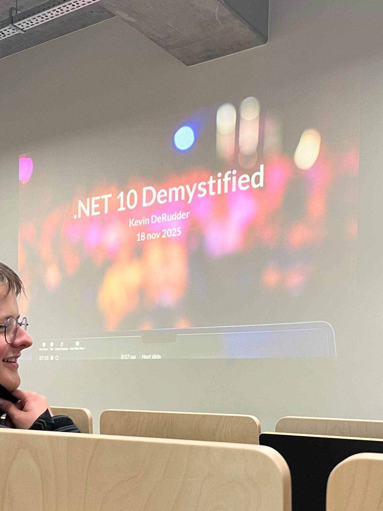

Event type: Tech & Meet
Speaker: Kevin De Rudder
Topic: .NET 10 and modern development

I attended a Tech & Meet session called “.NET 10 Demystified”, presented by Kevin De Rudder. The session focused on the improvements and new possibilities introduced with .NET 10, including performance, tooling, libraries, C# improvements and cloud-native development.
What I appreciated most was that the speaker did not only explain what was new, but also why these changes matter in real-world projects. The session helped me understand how development platforms evolve to support modern software requirements such as scalability, maintainability and performance.
The topic was especially relevant because .NET is widely used in enterprise environments. Even though I am specialising in cybersecurity, I think it is important to understand the platforms and technologies that organisations depend on. Security does not exist separately from development; it is connected to the way systems are designed, built and maintained.
The cloud-native part of the session was also interesting to me because it connects with my current interest in cloud and identity security. As more organisations move services to the cloud, developers and security professionals need to understand how application platforms support secure and reliable deployments.
Overall, this session helped me broaden my view of software development and reminded me that cybersecurity professionals benefit from understanding the full technology stack.